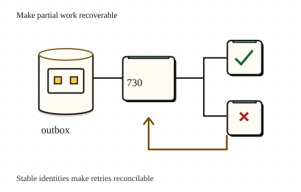

Go deeper · 7 minutes
Work across services
Make each step durable and show the user what is still pending.
Open this lesson
Charged, but no order
Checkout calls inventory, then payments, then delivery. The payment succeeds just as the order service crashes. A retry cannot tell whether to charge again. There is no single database transaction across these services. The business needs a durable story for each intermediate state, including an unknown result.
Choose the transaction boundary
Choose a step to fail, then run the saga. Undo completed effects in reverse order. A compensation is a new action that can need its own retries.
Worked example: one durable order
Commit the order, crash before publishing, then restart. Compare a durable outbox intent with a direct publish. Repeated delivery must still deduplicate at the consumer.
Bound the unfinished work
A broker acknowledgement does not prove an order shipped. Persist saga state, use stable operation keys for both effects and compensations, retry with jitter and alert on the age of pending work. Each consumer needs local atomicity and deduplication. Show received, awaiting payment, confirmed, refund pending and refunded states. Set a deadline and a support path for work that automation cannot settle.
Bound unfinished work
- 30-minute outage: 200 orders/s accumulate 360,000 orders. At 2 KB each, that is about 720 MB.
- Recover: 300/s net: 500/s processing − 200/s new arrivals = 300/s of backlog drain.
- 20-minute catch-up: 360,000 / 300 = 1,200 seconds. Set a deadline and a support path for unresolved work.
Key numbers
- Outage backlog
- ≈ 360,000 orders. 200/s × 1,800 s
- Workflow payload
- ≈ 720 MB. 360,000 × 2 KB; before indexes and replicas
- Catch-up
- ≈ 20 minutes. 360,000 ÷ (500 - 200)/s
Check your reasoning
Think through these questions before opening the lesson. In the game you can test the idea and compare your reasoning.
- An outbox relay publishes, then crashes before marking the row sent. What protects a consumer's local effect on replay?
- Why not use two-phase commit for checkout? Follow-up: are sagas equally atomic?
- Checkout times out while calling a provider that may have accepted the charge. What should it do?
- Where exactly is the idempotency key stored? Follow-up: the worker crashes between checking the key and applying the change.
- Workers handle 250/s while arrivals stay at 300/s. No work expires or is shed. What happens to the backlog?
The key point
Commit locally, publish through an outbox, and make every later effect safe to repeat or reconcile.
Practise this idea
- Medium
Notification service
Every other team asks you to send messages: order shipped, new login, a sale starting. You send them by push, email and text through outside providers who have their own limits. Send each message once, and never block the team that asked.
- Hard
Scheduled job service
Customers register jobs: "call my web address every night at 02:00" or "every hour on the hour". Aim to fire within 5 seconds; work still waiting after 60 seconds counts as failed. Retry safely after a crash. One external effect requires the customer endpoint to honor a stable job occurrence key. Half the world picks the top of the hour, so a huge crowd of jobs comes due in the same second.
- Medium
Checkout payments
Online shops send you their customers at the moment they pay. You call a card processor, record the order and answer in a couple of seconds. When the processor is slow or down, shoppers refresh and tap Pay again.
- Easy
Lab results portal
Labs send results to a portal, patients get a notice that a result is ready and open it. When the notice goes to thousands of people at the same minute, they all open the portal at once. Nobody should get the same notice twice.